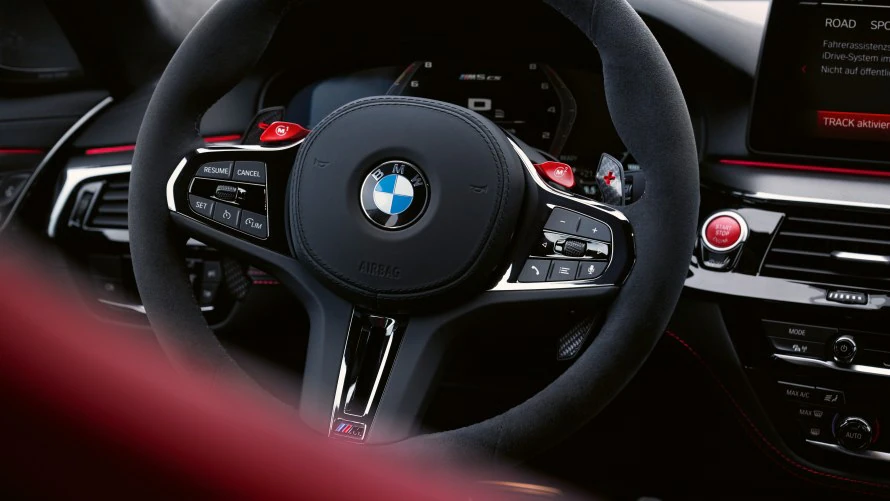

Innenraum

Der BMW M5 CS verbindet die Eigenschaften einer luxuriösen Limousine mit denen eines Hochleistungssportwagen für vier Personen auf besonders faszinierende Art und Weise. Die exklusiven, CS spezifischen Ausstattungen im Interieur unterstreichen dies zusätzlich. Der BMW M5 CS verfügt nicht nur über die M Carbon Schalensitze für Fahrer und Beifahrer, sondern auch über seitenhaltstarke Einzelsitze im Fond – ein Novum bei den BMW M5 Automobilen. Sportlich darauf abgestimmt: die M Interieurleisten in dunkler Aluminium-Carbonstruktur an Instrumententafel, Türen und Mittelkonsole und der obligatorische „CS“-Schriftzug in Rot.